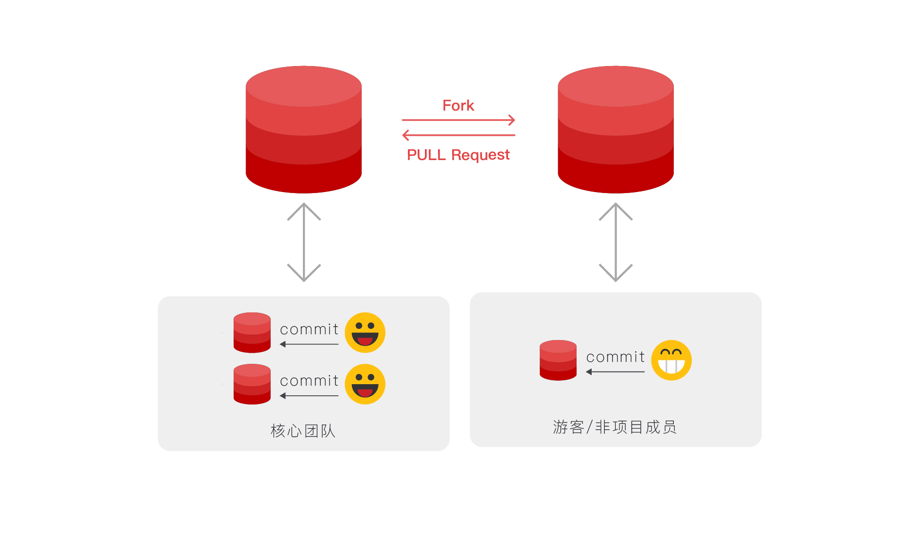
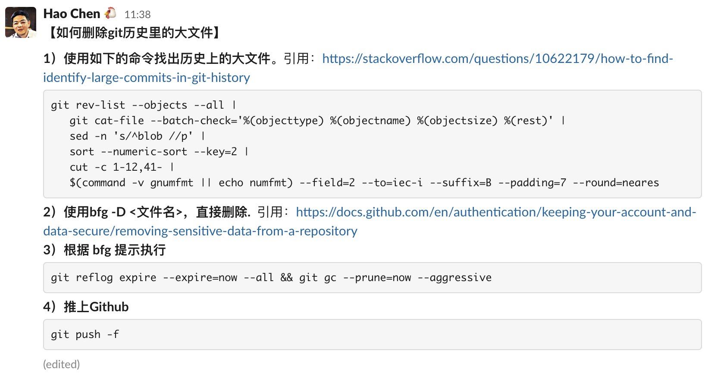

纸上得来终觉浅，绝知此事要躬行。
Git 是一个分布式版本控制软件，最初由 林纳斯·托瓦兹 创作，于 2005 年发布。最初目的是为更好地管理 Linux 内核开发。Git 在本地磁盘上就保存着所有有关当前项目的历史更新，处理速度快。Git 中的绝大多数操作都只需要访问本地文件和资源，不用实时联网。
Git LFS(Large File Storage- ⼤⽂件存储）是可以把⾳乐、图⽚、视频等指定的任意⽂件存在Git仓库之外，⽽在Git仓库中⽤⼀个占⽤空间1KB不到的⽂本指针来代替的⼩⼯具。通过把⼤⽂件存储在Git仓库之外，可以减⼩Git仓库本身的体积，使克隆Git仓库的速度加快，也使得Git不会因为仓库中充满⼤⽂件⽽损失性能。- 使⽤
Git LFS，在默认情况下，只有当前签出的commit下的LFS对象的当前版本会被下载。此外，我们也可以做配置，只取由Git LFS管理的某些特定⽂件的实际内容，⽽对于其他由Git LFS管理的⽂件则只保留⽂件指针，从⽽节省带宽，加快克隆仓库的速度；也可以配置⼀次获取⼤⽂件的最近版本，从⽽能⽅便地检查⼤⽂件的近期变动。

1. 问题描述
发现问题，然后判断病因！
我们使用过
Git的同学都知道，随着代码的更新迭代，仓库的体积越来越大。如果操作和使用都比较恰当的情况下，仓库体积不会突增的。但是如果使用不恰当的话，那就非常尴尬了，比如我们下面要说的这种情况，.git这个隐藏目录特别大。虽然
.git这个隐藏目录并不算在代码体积之后，但是我们拉代码的时候，是需要拉下来的，因为里面包含之前的提交记录等信息。这就会导致，原本平和的心情变得焦躁了，因为下载速度变的很慢。
➜ du -d 1 -h
680M ./.git
500K ./misc
68K ./docker
...
1.1G .
2. 原因解释
需要对 Git 的工作原理要有一定的理解，才可以明白！
当我们使用
git add和git commit命令的过程中，Git不知不觉就会帮我们创建出来了blob文件对象，然后更新index索引，再然后创建tree对象，最后创建出了commit对象。这些commit对象指向了顶层tree对象以及先前的commit对象。而上述创建出来的对象，都以文件的方式保存在
.git/objects目录下。所以，当我们在使用的过程中，提交了一个体积特别大的文件，就会被Git追踪记录在.git/objects文件夹下面。此时，如果我们再次删除这个体积特别大的文件，其实
Git只会记录了我们删除的这个操作，但并不会把文件从.git文件夹下面真正的删除，即.git文件夹完全不会变小。
3. 解决方法
根本上的解决方式就是，及时使用
lfs来追踪记录大文件！
- [方法一] 重建仓库
重建仓库的这种做法，算是一种比较一劳永逸且相对而言比较简单的方式。既然现在的仓库已经让我们无法忍受，与其这样，还不是删除重建来的爽快。但是，这种做法一般情况下，都是不可行，除非是自己的本地项目。
- [方法二] 删除大文件
第二种做法就是，直接找到 .git 目录下的大文件，将其删除掉，之后推送到远程代码库里面。这样做的前提是，删除所有其他分支，保留 master 或者 main 分支。这里需要注意的是，操作有风险，后果请自负。
# 查找大文件
$ git verify-pack -v .git/objects/pack/*.idx
12235d...123456789 tree 135 137 144088922
a453ab...34se212qz blob 3695898 695871 144734158
......
# 筛除前五个且保留第一列
$ git verify-pack \
-v .git/objects/pack/*.idx | \
sort -k 3 -n | tail -5 | awk '{print$1}'
12q626a...1234
2z32ax1...1234
......
# 查找出最大的5个文件和对应Commit信息
$ git rev-list --objects --all | \
grep "$(git verify-pack -v .git/objects/pack/*.idx | \
sort -k 3 -n | tail -5 | awk '{print$1}')"
91266a...12345 data/xxx.pkl
232ax1...12345 data/yyy.pkl
......
# rev-list: 列出Git仓库中的所有提交记录
# --objects: 列出该提交涉及的所有文件ID
# --all: 所有分支的提交(位于/refs下的所有引用)
# verify-pack: 显示已打包的内容(找大文件)
# 将其删除掉
$ git filter-branch \
--force --prune-empty --index-filter \
"git rm -rf --cached --ignore-unmatch YOU-FILE-NAME" \
--tag-name-filter cat -- --all
# filter-branch: 重写Git仓库中的提交
# --index-filter: 指定后面命令进行删除
# --all: 所有分支的提交(位于/refs下的所有引用)
# 强制推送
$ git push --force --all
# 彻底清除
$ rm -rf .git/refs/original/
$ git reflog expire --expire=now --all
$ git gc --prune=now
- [方法二] 删除大文件
第二种做法就是，直接找到 .git 目录下的大文件，将其删除掉，之后推送到远程代码库里面。这样做的前提是，删除所有其他分支，保留 master 或者 main 分支。这里需要注意的是，操作有风险，后果请自负。
# 使用如下的命令找出历史上的大文件
# 引用: https://stackoverflow.com/questions/10622179/how-to-find-identify-large-commits-in-git-history
> git rev-list --objects --all |
git cat-file --batch-check='%(objecttype) %(objectname) %(objectsize) %(rest)' |
sed -n 's/^blob //p' |
sort --numeric-sort --key=2 |
cut -c 1-12,41- |
$(command -v gnumfmt || echo numfmt) --field=2 --to=iec-i --suffix=B --padding=7 --round=nearest
# 直接删除
# 引用: https://docs.github.com/en/authentication/keeping-your-account-and-data-secure/removing-sensitive-data-from-a-repository
# 引用: https://rtyley.github.io/bfg-repo-cleaner
> bfg -D <文件名＞
# 根据bfg 提示执行
> git reflog expire --expire=now --all
> git ac --prune=now --aggressive
# 推上Github
> git push -f

- [方法三] 使用工具清理
幸好，Github 上面有一个叫做 git-filter-branch 的工具，就是帮助我们来清理大文件对象的，其使用 Scala 语言进行编写的，且操作起来也十分方便。只需要简单几步，就可以完成我们的需要。最新版需要确保本地的 java 为 Jdk8+。
# 下载封装好的jar包
$ wget https://repo1.maven.org/maven2/com/madgag/bfg/1.13.0/bfg-1.13.0.jar
# 克隆的时候需要--mirror参数
$ git clone --mirror git://example.com/big-repo.git
# 运行BFG来清理存储库
$ java -jar bfg.jar --strip-blobs-bigger-than 100M big-repo.git
# 去除脏数据
$ cd big-repo.git
$ git reflog expire --expire=now --all
$ git gc --prune=now --aggressive
# 推送上去
# 此推将更新远程服务器上的所有refs分支
$ git push
# 删除所有的名为'id_dsa'或'id_rsa'的文件
$ java -jar bfg.jar --delete-files id_{dsa,rsa} my-repo.git
# 删除所有大于50M的文件
$ java -jar bfg.jar --strip-blobs-bigger-than 50M my-repo.git
# 删除文件夹下所有的文件
$ java -jar bfg.jar --delete-folders doc my-repo.git
- [方法四] 使用 migrate 命令优化 .git 目录
迁移已有的 git 仓库，使⽤ git lfs 来进行管理。重写历史后的提交需执⾏ git commit --force，请确认在本地的操作合适⽆误后再进⾏提交。如有迁移⾄ git lfs 前的仓库有多份拷⻉，其他拷⻉可能需要执⾏ git reset --hard origin/master 来重置其本地的分⽀，注意执⾏ git reset --hard 命令将会丢失本地的改动。
| 编号 | 命令 | 含义解释 |
|---|---|---|
| 1 | git lfs migrate |
用来将当前已经被 GIT 储存库(.git)保存的文件以 LFS 文件的形式保存 |
# 重写master分⽀
# 将历史提交(指的是.git目录)中的*.zip都⽤lfs进⾏管理
$ git lfs migrate import --include-ref=master --include="*.zip"
# 重写所有分⽀及标签
# 将历史提交(指的是.git目录)中的*.rar,*.zip都⽤lfs进⾏管理
$ git lfs migrate import --everything --include="*.rar,*.zip"
# 切换后需要把切换之后的本地分支提交到远程仓库了，需要手动push更新远程仓库中的各个分支
$ git lfs push --force
# 切换成功后，GIT仓库的大小可能并没有变化
# 主要原因可能是之前的提交还在，因此需要做一些清理工作
# 如果不是历史记录非常重要的仓库，建议不要像上述这么做，而是重新建立一个新的仓库
$ git reflog expire --expire-unreachable=now --all
$ git gc --prune=now
4. 总结教训
勤于思考，必中头榜！
比较好的避免上述问题的出现，就是及时使用 lfs 来追踪、记录和管理大文件。这样大文件既不会污染我们的 .git 目录，也可以让我们更方便的使用。
# 1.开启lfs功能
$ git lfs install
# 2.追踪所有后缀名为“.psd”的文件
$ git lfs track "*.iso"
# 3.追踪单个文件
git lfs track "logo.png"
# 4.提交存储信息文件
$ git add .gitattributes
# 5.提交并推送到GitHub仓库
$ git add .
$ git commit -m "Add some files"
$ git push origin master
同时，还有一个方法，就是灵活使用 .gitignore 文件，及时排除我们仓库不需要的特殊目录或者文件，从而不会让不应该存在的文件，出现在我们的代码仓库里面。
.DS_Store
node_modules
/dist
*.zip
*.tar.gz
5. 参考链接
送人玫瑰，手有余香！